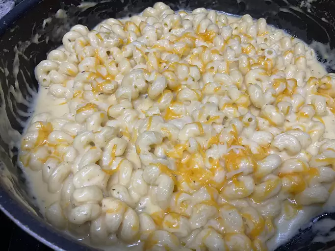

On this page we will cook a tasty and simple recipe borrowed from allrecipes.com.
Quick, easy, and tasty macaroni and cheese dish. Fancy, designer mac and cheese often costs forty or fifty dollars to prepare when you have so many expensive cheeses, but they aren't always the best tasting. This simple recipe is cheap and tasty.
Looking for a homemade alternative to boxed mac and cheese that's just as quick and easy? This stovetop mac and cheese uses staple ingredients and comes together in just 25 minutes.